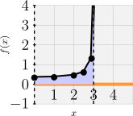
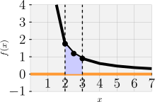

Repaso de Técnicas de Integración
1 Introducción
Bienvenidos a este repaso interactivo sobre técnicas de integración. Hoy revisaremos:
- Sustitución trigonométrica: Ideal para integrales con expresiones cuadráticas o raíces.
- Fracciones parciales: Útil para integrar funciones racionales.
Objetivo: Comprender, aplicar y visualizar estas técnicas con ejemplos y ejercicios prácticos.
2 Sustitución Trigonométrica
2.1 Concepto
La sustitución trigonométrica se usa para simplificar integrales que involucran expresiones como \(\sqrt{a^2 - x^2}\), \(\sqrt{x^2 + a^2}\) o \(\sqrt{x^2 - a^2}\). Sustituimos \(x\) por una función trigonométrica para eliminar raíces.
2.2 Sustituciones comunes
- \(x = a \sin \theta\) para \(\sqrt{a^2 - x^2}\)
- \(x = a \cos \theta\) también para \(\sqrt{a^2 - x^2}\)
- \(x = a \tan \theta\) para \(\sqrt{x^2 + a^2}\)
- \(x = a \sec \theta\) para \(\sqrt{x^2 - a^2}\)
Estas sustituciones aprovechan identidades trigonométricas para simplificar integrales complicadas.
2.3 Ejemplo resuelto (Indefinida)
Calcular:
\[ \int \frac{dx}{\sqrt{9 - x^2}} \]
Solución: Sustituimos \(x = 3 \sin \theta\), \(dx = 3 \cos \theta \, d\theta\).
\[ \int \frac{3 \cos \theta \, d\theta}{\sqrt{9 - 9 \sin^2 \theta}} = \int \frac{3 \cos \theta}{3 \cos \theta} \, d\theta = \int d\theta = \theta + C \]
Volviendo a \(x\):
\[ \theta = \arcsin \left( \frac{x}{3} \right) \]
Respuesta final:
\[ \boxed{\arcsin \left( \frac{x}{3} \right) + C} \]
2.4 Ejemplo adicional (Definida)
Calcular:
\[ \int_0^{3} \frac{dx}{\sqrt{9 - x^2}} \]
Solución: Usamos el resultado anterior:
\[ \arcsin \left( \frac{x}{3} \right) \Big|_0^3 = \arcsin(1) - \arcsin(0) = \frac{\pi}{2} - 0 = \frac{\pi}{2} \]

3 Fracciones Parciales
3.1 Concepto
El método de fracciones parciales se usa para integrar funciones racionales (cociente de polinomios) descomponiéndolas en sumas de fracciones más simples.
3.1.1 Requisitos
- Grado del numerador < grado del denominador (si no, hacer división larga).
- Factorizar el denominador.
3.1.2 Tipos de factores
- Factores lineales simples: \(\frac{A}{x - r}\)
- Factores cuadráticos irreducibles: \(\frac{Bx + C}{x^2 + px + q}\)
- Factores repetidos: incluir potencias ascendentes
3.2 Ejemplo resuelto (Indefinida)
Calcular:
\[ \int \frac{2x + 3}{(x - 1)(x + 2)} \, dx \]
Solución: Descomponemos en fracciones parciales:
\[ \frac{2x + 3}{(x - 1)(x + 2)} = \frac{A}{x - 1} + \frac{B}{x + 2} \]
Multiplicamos ambos lados por \((x - 1)(x + 2)\):
\[ 2x + 3 = A(x + 2) + B(x - 1) \]
Resolvemos: - \(A + B = 2\) - \(2A - B = 3\) → \(A = 5/3\), \(B = 1/3\)
Integrando:
\[ \frac{5}{3} \ln |x - 1| + \frac{1}{3} \ln |x + 2| + C \]
3.3 Ejemplo adicional (Definida)
Calcular:
\[ \int_2^3 \frac{2x + 3}{(x - 1)(x + 2)} \, dx \]
Solución: Usamos la primitiva:
\[ \left[ \frac{5}{3} \ln |x - 1| + \frac{1}{3} \ln |x + 2| \right]_2^3 \]
Calculamos:
\[ = \frac{5}{3} [\ln 2 - \ln 1] + \frac{1}{3} [\ln 5 - \ln 4] = \frac{5}{3} \ln 2 + \frac{1}{3} (\ln 5 - \ln 4) \]

–>
4 Problemas propuestos
4.1 Sustitución trigonométrica
1. Calcular: \[ \int \frac{x^2}{\sqrt{4 - x^2}} \, dx \] 2. Calcular: \[\int \frac{dx}{x^2 \sqrt{x^2 - 9}}\] | 3. Calcular (integral definida): \[\int_0^1 \frac{dx}{\sqrt{1 - x^2}}\] | 4. Calcular: \[\int \sqrt{16 + x^2} \, dx\] 5. Calcular (integral definida): \[\int_0^2 \frac{x}{\sqrt{x^2 + 9}} \, dx\] |
4.2 Fracciones parciales
Calcular: \[ \int \frac{2x + 3}{(x - 1)(x + 2)} \, dx \]
Calcular: \[ \int \frac{x^2 + 1}{x^3 + x} \, dx \]
Calcular (integral definida): \[ \int_1^2 \frac{1}{x^2 - 1} \, dx\]
Calcular: \[\int \frac{3x + 4}{x^2 + 3x - 4} \, dx\]
Calcular (integral definida): \[\int_0^1 \frac{1}{x^2 (x + 1)} \, dx\] ———————————————————————–| # Soluciones a los problemas propuestos ## Sustitución trigonométrica
Problema 1 \[\int \frac{x^2}{\sqrt{4 - x^2}} \, dx\] Esquema de solución: - Sustituir \(x = 2 \sin \theta\) - Resolver integral en términos de \(\theta\) - Volver a \(x\) al final |
Problema 2 \[\int \frac{dx}{x^2 \sqrt{x^2 - 9}}\] Esquema de solución:
- Sustituir \(x = 3 \sec \theta\)
- Resolver y simplificar
- Problema 3 (definida) \[\int_0^1 \frac{dx}{\sqrt{1 - x^2}} \]
Resultado conocido: \[\arcsin(x) \Big|_0^1 = \frac{\pi}{2}\]
- Problema 4 \[\int \sqrt{16 + x^2} \, dx\] Sugerencia:
- Sustituir \(x = 4 \tan \theta\)
- Resolver integral
- Problema 5 (definida) \[\int_0^2 \frac{x}{\sqrt{x^2 + 9}} \, dx\] Idea:
- Usar sustitución \(u = x^2 + 9\)
4.3 Fracciones parciales
- Problema 1 \[\int \frac{2x + 3}{(x - 1)(x + 2)} \, dx\] Esquema:
- Descomponer en fracciones parciales
- Integrar cada término
- Problema 2 \[\int \frac{x^2 + 1}{x^3 + x} \, dx\] Esquema:
- Factorizar denominador: \(x(x^2 + 1)\)
- Separar términos e integrar
- Problema 3 (definida) \[\int_1^2 \frac{1}{x^2 - 1} \, dx\] Nota:
- Factorizar \(x^2 - 1 = (x - 1)(x + 1)\)
- Descomponer y evaluar en límites
- Problema 4 \[\int \frac{3x + 4}{x^2 + 3x - 4} \, dx\] Esquema:
- Factorizar denominador: \((x + 4)(x - 1)\)
- Fracciones parciales
- Problema 5 (definida) \[\int_0^1 \frac{1}{x^2 (x + 1)} \, dx \] Esquema:
- Descomponer en fracciones parciales
- Integrar cada parte entre \(0\) y \(1\)
```